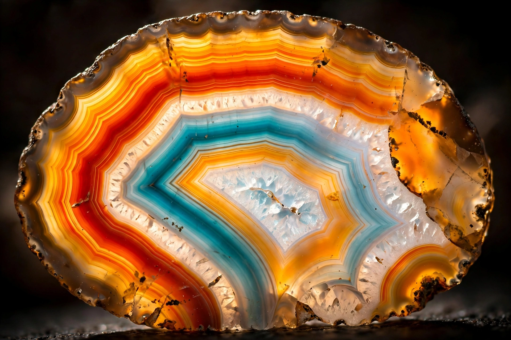

Agate
From Wikipedia, the free encyclopedia
| Agate | |
|---|---|
| Category | Chalcedony variety |
| Formula | SiO2 (silicon dioxide) |
| Crystal system | Trigonal |
| Mohs hardness | 6.5–7 |
| Lustre | Waxy to vitreous |
Agate is a banded variety of the mineral chalcedony, a cryptocrystalline form of quartz (silicon dioxide). It is characterised by its fine grain and bright, concentric bands of colour, and has been prized as a semi-precious gemstone since antiquity.

Polished agate slice showing concentric bandingFormation
Agates form in the cavities of volcanic rocks, where silica-rich groundwater deposits successive layers of chalcedony on the cavity walls. The characteristic banding reflects variations in the chemistry and temperature of the depositing solutions over time. The hollow centre of some nodules may contain quartz crystals (forming geodes).
Varieties
- Moss agate — contains green, moss-like inclusions of chlorite or hornblende
- Fire agate — shows iridescent internal layers
- Blue lace agate — delicate light-blue banding, found in Namibia
- Dendritic agate — bears tree-like manganese or iron inclusions
- Onyx — black-and-white banded agate
Uses
Agate is cut into cabochons, beads and ornamental objects, and has long been used for seals, cameos and knife edges. Industrially, agate mortars and pestles are used in chemistry laboratories for their hardness and chemical resistance.
Sources
Major sources include Brazil, Uruguay, Botswana, Mexico, India and the United States (notably the Lake Superior agates of Minnesota and Michigan).